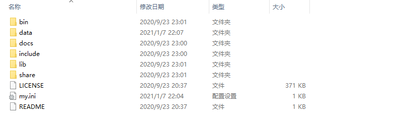
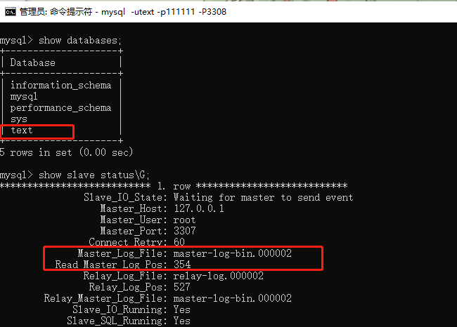

# 概述
MySQL 是现在普遍使用的数据库，但是如果宕机了必然会造成数据丢失。为了保证 MySQL 数据库的可靠性，就要会一些提高可靠性的技术。MySQL 主从同步可以做到实时备份数据。
用途：备份，读写分离，高可用和故障切换，MySQL 升级测试
# 原理
- 作为主服务器的
Master，会把自己的每一次改动（每条 sql 语句）都记录到二进制日志Binarylog中 - 作为从服务器的
Slave将Master的Binary log拷贝到它的中继日志relay log中，然后Slave自己的sql线程会负责读取这个中继日志，并执行一遍。 - 这样
Slave的数据就和Master上的数据相同了。 - 整个过程，MySQL 使用 3 个线程来执行复制同步功能，其中两个线程
Sql线程和IO线程在从服务器，另外一个线程IO线程在主服务器。

# 准备工作，win10 安装多个 MySQL
- 下载 MySQL 免安装版，点这里进行下载
- 解压下载好的 ZIP 文件
- 在解压后的文件夹下新建 my.ini 文件。内容参考如下：
[mysql] | |
# 设置 mysql 客户端默认字符集 | |
default-character-set=utf8 | |
[mysqld] | |
#设置端口 | |
port = 3307 | |
# 设置 mysql 的安装目录 | |
basedir=D:\ceshi\mysql2\mysql-8.0.22-winx64 | |
# 设置 mysql 数据库的数据的存放目录 | |
datadir=D:\ceshi\mysql2\mysql-8.0.22-winx64\data | |
sql_mode=NO_ENGINE_SUBSTITUTION,STRICT_TRANS_TABLES | |
character-set-server = utf8mb4 | |
performance_schema_max_table_instances = 600 | |
table_definition_cache = 400 |
- 目录结构

- 管理员身份运行 cmd, 并将切换到你解压过后的文件的 bin 目录下。
- 初始化 MySQL
mysqld --defaults-file=D:\ceshi\mysql2\mysql-8.0.22-winx64\my.ini --initialize --console |
执行完毕后，文件结构多了一个 data 目录，并记录初始化密码，后面第一次进入 mysql 修改密码需要
- 初始化 MySQL 服务
mysqld install MySQL2 --defaults-file="D:\ceshi\mysql2\mysql-8.0.22-winx64\my.ini" |
- 启动 MySQL 服务
net start MySQL2 |
- 以 root 身份进入 MySQL，输入初始化 MySQL 时系统生成的密码
mysql -uroot -p -P3307 (指定端口) |
- 修改密码
ALTER USER 'root'@'localhost' IDENTIFIED WITH mysql_native_password BY '新密码'; |
- 密码修改后刷新权限，就可以使用 mysql 了
flush privileges; |
- 至此
主服务器安装完毕，从服务器以此安装并更改从服务器用户名
use mysql; | |
update user set user="新用户名" where user="旧用户名"; | |
flush privileges; |
# 配置
# 测试环境
- 主服务器：127.0.0.1:3307
- 从服务器：127.0.0.1:3308
- MySQL 版本：8.0
- 系统：Win10
# 主服务器配置
- 配置
my.ini
log-bin=master-log-bin # 开启二进制日志功能，可以随便取 | |
server-id=1 # 同一局域网内注意要唯一 | |
innodb-file-per-table=ON |
- 重启服务，并进入 MySQL
- 查看主服务器状态信息
show master status; |
这里的文件名和位置值会在后面的配置中用到
- 给复制用户授权，并刷新权限
update user set host='%' where user='text'; # '%' 代表所有局域 IP | |
flush privileges; |
# 从服务器配置
- 配置
my.ini，重启服务，并进入 MySQL
log-bin=slave-log-bin # 开启二进制日志功能，以备 Slave 作为其它 Slave 的 Master 时使用 | |
relay_log=relay-log # relay_log 配置中继日志 | |
relay_log_index=relay-log.index | |
server-id=2 # 同一局域网内注意要唯一 | |
innodb_file_per_table=ON |
- 用主服务器提供的复制用户连接主服务器
change master to master_host='127.0.0.1',master_port=3307,master_user='root',master_password='000000',master_log_file='master-log-bin.000002',master_log_pos=156; |
参数说明
master_host ：Master 的地址
master_port：Master 的端口号
master_user：Master 的用户名
master_password：Master 的密码
master_log_file：指定 Slave，从哪个日志文件开始复制数据
master_log_pos：从哪个 Position 开始读
master_connect_retry：如果连接失败，重试的时间间隔，单位是秒，默认是 60 秒

- 启动复制线程，此时会启动 IO Thread 和 SQL Thread 这两个线程
statr slave; # 启动 | |
stop slave; # 停止 |
- 查看从服务器状态信息
show slave status\G; |
Slave_IO_Running: Yes， Slave_SQL_Running: Yes，两个线程必须为 YES
# 测试
- 此时
主服务器和从服务器，都没有数据库
- 在
主服务器上新建一个数据库text
- 在
从服务器上查看，可以看见主从服务器已经完成同步，大功告成

# 常见问题
-
当我们配置好 MySQL 主从同步时，原本是可以实现主从同步的，但是重启机器后就发现无法同步了。
-
MySQL Replication 中 slave 机器上有两个关键的线程，死一个都不行，一个是
Slave_IO_Running，一个是Slave_SQL_Running。一个负责与主机的 IO 通信，一个负责自己的 slave mysql 语句执行。
- 如果是
Slave_SQL_Running：No
- 解决办法
stop slave; | |
set global sql_slave_skip_counter=1; | |
start slave; |
- 如果是
Slave_IO_Running：No
-
查看主服务器状态
-
查看从服务器状态
-
一般情况下是日志没对上
stop slave; | |
change master to master_log_file='mysql-bin.000026',master_log_pos=0; | |
slave start; | |
show slave status\G; |